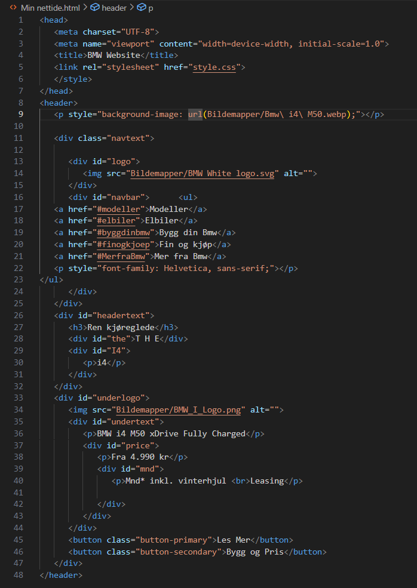
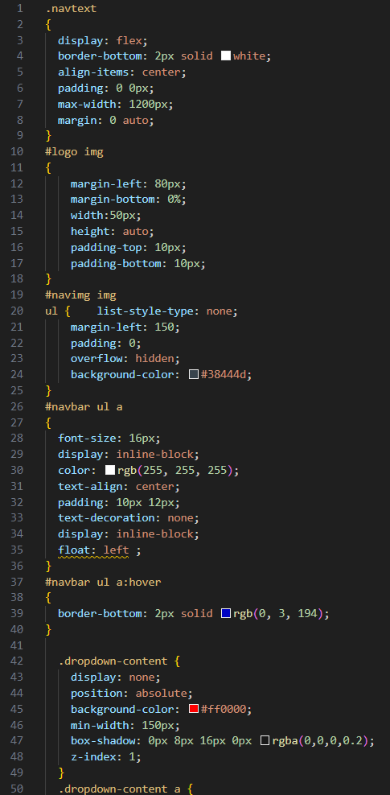

Kopi av nettside
Den første oppgaven vi hadde i programmering var å lage en kopi av en eksisterende nettside. Jeg valgte å lage en kopi av BMW sin side. Jeg startet litt sendt fordi jeg prøvde å finne en nettside jeg ville kopiere. Jeg fikk hjelp av både lærer og AI. Siden ser ganske lik ut men noen ting er ikke helt på plass. I tilleg til alt dette fikk jeg bare fikset headeren altså det øverste på nettsiden.  Bilde oppgaver
Jeg har tatt bilder når jeg har hatt produksjon og historiefortelling. Etter vi har tatt bilder tar vi og redigerer dem på adobe lightroom eller adobe photoshop.


Bygge PC
Jeg har bygget en PC med onkelen min. Jeg hadde en PC fra før av men jeg trengte en ny fordi den gamle
PCen min fikk bluescreen og masse sånt. Vi startet med å kjøpe et kabinett. Kabinettet hadde jeg i noen uker eller måneder før vi fikk de andre delene.
Vi gjorde litt research og fant alle de nye PC delene vi trengte. Når vi hadde alle delene begynte vi å bygge. Det gikk overaskende fort. Og nå har jeg en mye bedre PC.